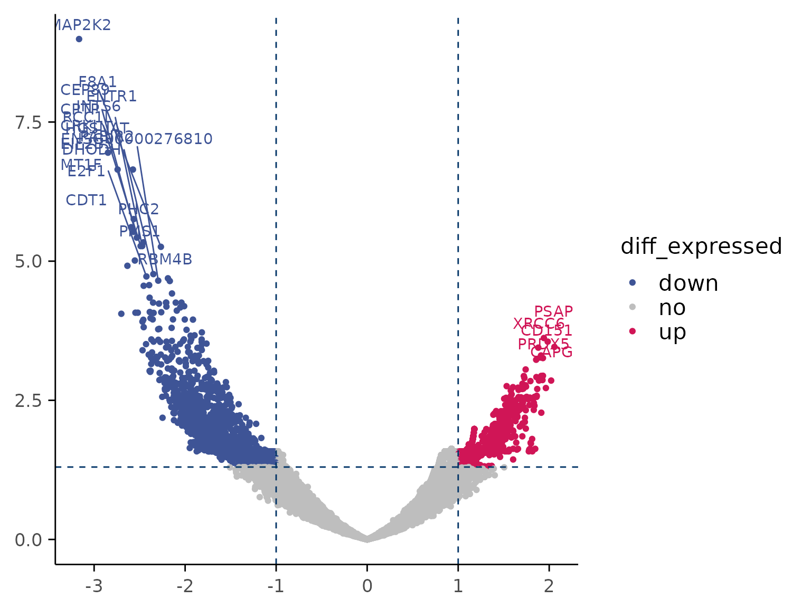
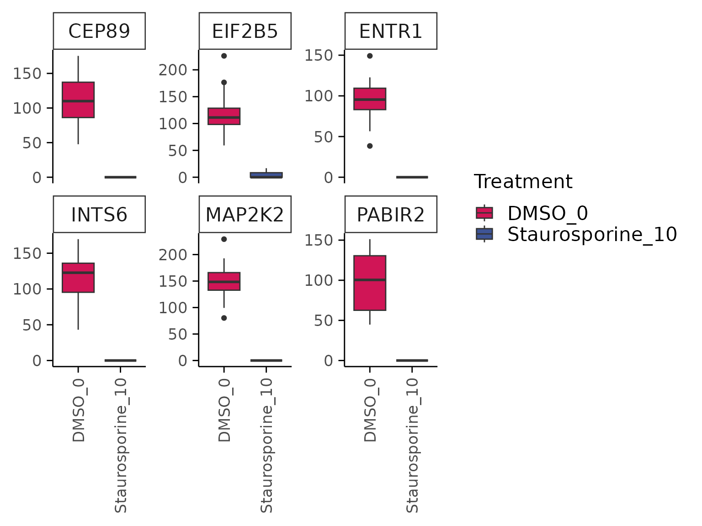
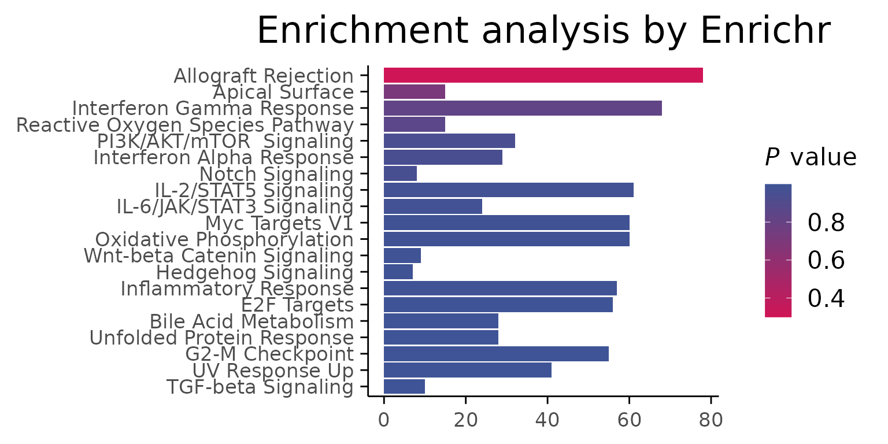
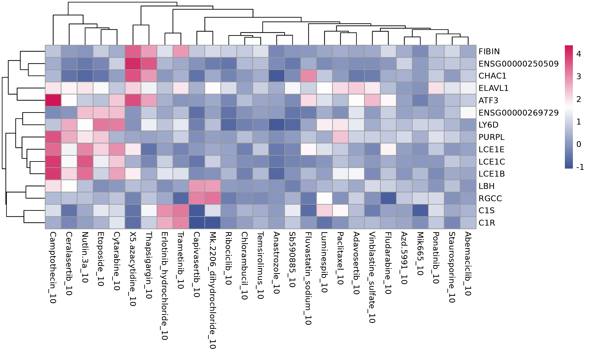

library(macpie)
library(enrichR)
#> Welcome to enrichR
#> Checking connections ...
#> Enrichr ... Connection is Live!
#> FlyEnrichr ... Connection is Live!
#> WormEnrichr ... Connection is Live!
#> YeastEnrichr ... Connection is Live!
#> FishEnrichr ... Connection is Live!
#> OxEnrichr ... Connection is Live!
library(tibble)
library(parallel)
library(mcprogress)
library(PoiClaClu)
library(Matrix)
library(data.table)
library(Seurat)
#> Loading required package: SeuratObject
#> Loading required package: sp
#> 'SeuratObject' was built under R 4.3.0 but the current version is
#> 4.3.3; it is recomended that you reinstall 'SeuratObject' as the ABI
#> for R may have changed
#>
#> Attaching package: 'SeuratObject'
#>
#> The following objects are masked from 'package:base':
#>
#> intersect, t
library(tidyseurat)
#> Loading required package: ttservice
#> ========================================
#> tidyseurat version 0.8.0
#> If you use TIDYSEURAT in published research, please cite:
#>
#> Mangiola et al. Interfacing Seurat with the R tidy universe. Bioinformatics 2021.
#>
#> This message can be suppressed by:
#> suppressPackageStartupMessages(library(tidyseurat))
#>
#> To restore the Seurat default display use options("restore_Seurat_show" = TRUE)
#> ========================================
#>
#>
#> Attaching package: 'tidyseurat'
#>
#> The following object is masked from 'package:ttservice':
#>
#> plot_ly
library(stringr)
library(pheatmap)Data access
The full dataset (>10 MB of.rdsfiles) is currently under restricted release and will become publicly available upon publication (at Zenodo).
In the meantime, please contact us for early access.
Differential gene expression
Key points:
- use compute_single_de to perform a differential expression analysis for one treatment group vs control
- use compute_multi_de to perform differential expression analyses for all treatment groups vs control
- use volcano plot, box plot and heatmap to show results from the
analyses and visualise gene expression levels
- use enrichr for pathway enrichment analysis
project_name <- "PMMSq033"
project_metadata <- system.file("extdata/PMMSq033_metadata.csv", package = "macpie")
# Load metadata
metadata <- read_metadata(project_metadata)
metadata$Time <- as.factor(metadata$Time)
metadata$Concentration_1 <- as.factor(metadata$Concentration_1)
# Import raw data
project_rawdata <- "/home/rstudio/macpie/macpieData/PMMSq033/raw_matrix/"
raw_counts <- Read10X(data.dir = project_rawdata)
# Create tidySeurat object
mac <- CreateSeuratObject(counts = raw_counts,
project = project_name,
min.cells = 1,
min.features = 1)
#> Warning: Feature names cannot have underscores ('_'), replacing with dashes
#> ('-')
# Join with metadata
mac <- mac %>%
inner_join(metadata, by = c(".cell" = "Barcode"))
# Add unique identifier
mac <- mac %>%
mutate(combined_id = str_c(Treatment_1, Concentration_1, sep = "_")) %>%
mutate(combined_id = gsub(" ", "", .data$combined_id))
# Filter by read count per sample group
mac <- filter_genes_by_expression(mac,
group_by = "combined_id",
min_counts = 10,
min_samples = 2)
# Calculate percent of mitochondrial and ribosomal genes
mac[["percent.mt"]] <- PercentageFeatureSet(mac, pattern = "^mt-|^MT-")
mac[["percent.ribo"]] <- PercentageFeatureSet(mac, pattern = "^Rp[slp][[:digit:]]|^Rpsa|^RP[SLP][[:digit:]]|^RPSA")3.1. Single comparison
Similar to scRNA-seq data, MAC-seq gene expression counts have an excess of zero counts compared to bulk RNA-seq. Statistical models assuming a Poisson or negative binomial distribution may not fit the data well. For that reason, differential expression effects could be over or underestimated.
Let’s first perform the differential expression analysis with a couple of methods and visualise the results on a volcano plot.
# First perform the differential expression analysis
treatment_samples <- "Staurosporine_10"
control_samples <- "DMSO_0"
top_table <- compute_single_de(mac, treatment_samples, control_samples, method = "limma_voom")
# Let's visualise the results with a volcano plot
plot_volcano(top_table, max.overlaps = 18)
#> Warning: ggrepel: 2947 unlabeled data points (too many overlaps). Consider
#> increasing max.overlaps
Based on the results, we can quickly check gene expression levels in counts per million (CPM) for selected genes between treatment and control samples as described below.
genes <- top_table$gene[1:6]
group_by <- "combined_id"
plot_counts(mac,genes, group_by, treatment_samples, control_samples, normalisation = "cpm", color_by = "combined_id")
#> Normalizing layer: counts
Some plotting functions also have a “summarise” version that provides collapsed versions of the results in a table format.
summarise_de(top_table, lfc_threshold = 1, padj_threshold = 0.05)
#> # A tibble: 1 × 6
#> Total_genes_tested Significantly_upregulated Significantly_downregulated
#> <int> <int> <int>
#> 1 20114 835 2136
#> # ℹ 3 more variables: Total_significant <int>, Padj_threshold <dbl>,
#> # Log2FC_threshold <dbl>3.2. Pathway analysis
Differential gene expression results for individual comparisons of treatment vs control can be easily performed with functions from package enrichR and fgsea. In the following case, the effect of Staurosporine on breast cancer cells through Myc inactivation can be observed through pathway enrichment analyses. If you check the data from “DisGeNET”, you will see that our mcf7 (breast cancer cell line) samples are correctly enriched for breast cancer profiles.
top_genes <- top_table %>%
filter(p_value_adj < 0.05) %>%
select(gene) %>%
pull()
enriched <- enrichR::enrichr(top_genes, c("MSigDB_Hallmark_2020","DisGeNET",
"RNA-Seq_Disease_Gene_and_Drug_Signatures_from_GEO"))
#> Uploading data to Enrichr... Done.
#> Querying MSigDB_Hallmark_2020... Done.
#> Querying DisGeNET... Done.
#> Querying RNA-Seq_Disease_Gene_and_Drug_Signatures_from_GEO... Done.
#> Parsing results... Done.
p1 <- enrichR::plotEnrich(enriched[[1]]) +
macpie_theme(legend_position_ = 'right') +
scale_fill_gradientn(colors = macpie_colours$divergent)
#> Scale for fill is already present.
#> Adding another scale for fill, which will replace the existing scale.
gridExtra::grid.arrange(p1, ncol = 1)
3.3. Differential gene expression - multiple comparisons
Since MAC-seq is commonly used for high-throughput screening of compound libraries, we often want to compare multiple samples in a screen vs the control. This process can easily be parallelised. First we select a vector of “treatments” as combined_ids that do not contain the word “DMSO”. (Warning, due to the limitations of “mclapply”, parallelisation speedup currently only works on OSX and Linux machines, and not on Windows.)
mac$combined_id <- make.names(mac$combined_id)
treatments <- mac %>%
filter(Concentration_1 == 10) %>%
select(combined_id) %>%
filter(!grepl("DMSO", combined_id)) %>%
pull() %>%
unique()
#> tidyseurat says: Key columns are missing. A data frame is returned for independent data analysis.
mac <- compute_multi_de(mac, treatments, control_samples = "DMSO_0", method = "limma_voom", num_cores = 1)We often want to ask which genes are differentially expressed in more than one treatment group.
Here, we can visualise treatment groups with shared differentially expressed genes, defined as the top 5 DE genes from each single drug comparison (treatment vs control) that are found in at least 2 different treatment groups.
The heatmap below shows shared differentially expressed genes with corresponding log2FC values.
plot_multi_de(mac, group_by = "combined_id", value = "log2FC", p_value_cutoff = 0.01, direction="up", n_genes = 5, control = "DMSO_0", by="fc")
The outputs from the analyses above can be represented in table format.
summarise_de(mac, lfc_threshold = 1, padj_threshold = 0.01, multi=TRUE)
#> # A tibble: 27 × 7
#> combined_id Total_genes_tested Significantly_upregu…¹ Significantly_downre…²
#> <chr> <int> <int> <int>
#> 1 Abemaciclib… 20114 36 46
#> 2 Adavosertib… 20114 307 104
#> 3 Anastrozole… 20114 0 1
#> 4 Azd.5991_10 20114 0 0
#> 5 Camptotheci… 20114 1108 1327
#> 6 Capivaserti… 20114 22 14
#> 7 Ceralaserti… 20114 174 88
#> 8 Chlorambuci… 20114 0 0
#> 9 Cytarabine_… 20114 8 6
#> 10 Erlotinib_h… 20114 252 155
#> # ℹ 17 more rows
#> # ℹ abbreviated names: ¹Significantly_upregulated, ²Significantly_downregulated
#> # ℹ 3 more variables: Total_significant <int>, padj_threshold <dbl>,
#> # Log2FC_threshold <dbl>3.4. Pathway analysis - multiple comparisons
The pathway enrichment analysis is done by using enrichR
Summarise the outputs from multi de comparison in a table
# Load genesets from enrichr for a specific species or define your own
enrichr_genesets <- download_geneset("human", "MSigDB_Hallmark_2020")
mac <- compute_multi_enrichr(mac, genesets = enrichr_genesets)
enriched_pathways_mat <- mac@tools$pathway_enrichment %>%
bind_rows() %>%
select(combined_id, Term, Combined.Score) %>%
pivot_wider(names_from = combined_id, values_from = Combined.Score) %>%
column_to_rownames(var = "Term") %>%
mutate(across(everything(), ~ ifelse(is.na(.), 0, log1p(.)))) %>% # Replace NA with 0 across all columns
as.matrix()
pheatmap(enriched_pathways_mat, color = macpie_colours$continuous_rev)
Quick check of some treatments:
Nutlin.3a is a MDM2-P53 inhibitor and stablises the p53 protein. It induces cell autophagy and apotopsis. Nutlin-activated p53 induces G1 and G2 arrest in cancer cell lines (see in the pathway enrichment heatmap).
Ref: Tovar C, et al. Proc Natl Acad Sci USA. 2006;103(6):1888–1893. Shows Nutlin-3’s effect on various p53 targets in cancer cell lines.